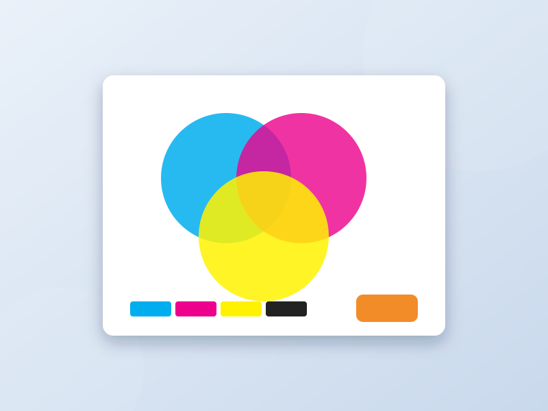

Fotocopy & Print Dokumen
Fotocopy
Fotocopy hitam putih dan berwarna, ukuran A4, F4, dan A3. Cepat dan bersih.
Mulai dariRp 250 / lembar


Dari lembar tugas sampai spanduk acara, pilih kategori yang Anda butuhkan.
Tekan ikon keranjang untuk menambahkan. Harga final dikonfirmasi admin.
Fotocopy hitam putih dan berwarna, ukuran A4, F4, dan A3. Cepat dan bersih.
 Fotocopy & Print Dokumen
Fotocopy & Print DokumenPrint dokumen, tugas, dan laporan A4/F4 dari file. Kirim lewat WhatsApp atau email.
Cetak ukuran besar A2, A1, dan A0 untuk gambar teknik, poster, dan peta.
Large FormatCetak banner, spanduk, dan backdrop untuk usaha, acara, dan sekolah.
Jilid & LaminatingJilid lakban, spiral, dan hard cover untuk skripsi, laporan, dan buku.
 Jilid & Laminating
Jilid & LaminatingLaminating dokumen, sertifikat, dan kartu agar awet dan tahan air.
Sticker label, kemasan, dan branding dengan potong custom (kiss cut).
Brosur, flyer, dan leaflet promosi dengan berbagai pilihan kertas dan lipatan.
Sticker label, kemasan, dan branding dengan potong custom (kiss cut).
Kartu nama profesional untuk usaha dan perusahaan, satu atau dua sisi.
Undangan pernikahan, ulang tahun, dan acara dengan pilihan kertas dan amplop.
Fotocopy hitam putih dan berwarna, ukuran A4, F4, dan A3. Cepat dan bersih.
Fotocopy & Print DokumenPrint dokumen, tugas, dan laporan A4/F4 dari file. Kirim lewat WhatsApp atau email.
Print A3 untuk gambar teknik, poster kecil, denah, dan presentasi.
Cetak ukuran besar A2, A1, dan A0 untuk gambar teknik, poster, dan peta.
Large FormatCetak banner, spanduk, dan backdrop untuk usaha, acara, dan sekolah.
Jilid & LaminatingJilid lakban, spiral, dan hard cover untuk skripsi, laporan, dan buku.
Jilid & LaminatingLaminating dokumen, sertifikat, dan kartu agar awet dan tahan air.
Sticker label, kemasan, dan branding dengan potong custom (kiss cut).
Pilih kategori, lihat produk pilihannya langsung di sini.
Fotocopy hitam putih dan berwarna, ukuran A4, F4, dan A3. Cepat dan bersih.
Fotocopy & Print DokumenPrint dokumen, tugas, dan laporan A4/F4 dari file. Kirim lewat WhatsApp atau email.
Print A3 untuk gambar teknik, poster kecil, denah, dan presentasi.
Cetak ukuran besar A2, A1, dan A0 untuk gambar teknik, poster, dan peta.
Large FormatCetak banner, spanduk, dan backdrop untuk usaha, acara, dan sekolah.
Jilid & LaminatingJilid lakban, spiral, dan hard cover untuk skripsi, laporan, dan buku.
Jilid & LaminatingLaminating dokumen, sertifikat, dan kartu agar awet dan tahan air.
Sticker label, kemasan, dan branding dengan potong custom (kiss cut).

Digital PrintingCetak full color kualitas tinggi di Art Paper, Art Carton, dan Photo Paper.
Brosur, flyer, dan leaflet promosi dengan berbagai pilihan kertas dan lipatan.
Kartu nama profesional untuk usaha dan perusahaan, satu atau dua sisi.
Undangan pernikahan, ulang tahun, dan acara dengan pilihan kertas dan amplop.
Cetak buku, buku acara, modul, dan yasin dengan jumlah fleksibel.
Pilih, checkout lewat WhatsApp, lalu lacak pesanan dengan kode.
Chat lewat WhatsApp dan sebutkan kebutuhan cetak Anda.
Kirim file desain atau dokumen, kami cek kelengkapannya.
Kami kirim rincian harga dan estimasi waktu pengerjaan.
Ambil di toko, atau kami antar untuk area tertentu.
Beberapa pelanggan tetap yang rutin memesan cetak kebutuhan mereka.
Nama pelanggan di atas adalah contoh untuk keperluan demo.
Pelajar, guru, kantor, dan pelaku UMKM sudah mempercayakan kebutuhan cetak mereka kepada kami.
Bacaan singkat agar hasil cetak sesuai harapan dan biaya tetap terkendali.
Biaya print sering membengkak tanpa terasa. Berikut cara sederhana mengurangi biaya tanpa mengorbankan kualitas.
Baca selengkapnyaSalah memilih kertas bisa membuat hasil cetak kurang maksimal. Kenali perbedaan gramasi dan permukaan kertas.
Baca selengkapnya Panduan
PanduanBanner terlalu kecil tidak terbaca, terlalu besar boros. Pelajari cara menghitung ukuran ideal.
Baca selengkapnyaKirim file dan kebutuhan Anda. Kami balas dengan rincian harga dan estimasi selesai, biasanya dalam hitungan menit.